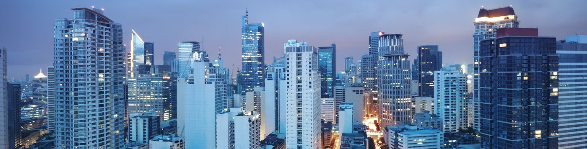

Manila, Philippines
Welcome Manila!
Manila, capital and chief city of the Philippines. The city is the centre of the country’s economic, political, social, and cultural activity. It is located on the island of Luzon and spreads along the eastern shore of Manila Bay at the mouth of the Pasig River. The city’s name, originally Maynilad, is derived from that of the nilad plant, a flowering shrub adapted to marshy conditions, which once grew profusely along the banks of the river; the name was shortened first to Maynila and then to its present form. In 1975, by presidential decree, Manila and its contiguous cities and municipalities were integrated to function as a single administrative region, known as Metropolitan Manila (also called the National Capital Region); the Manila city proper encompasses only a small proportion of that area. Pasig River, Manila Pasig River, Manila Learn about the Southeast Asian island's initial settlement, diverse economy and people, and volcanic activity Learn about the Southeast Asian island's initial settlement, diverse economy and people, and volcanic activitySee all videos for this article Manila has been the principal city of the Philippines for four centuries and is the centre of its industrial development as well as the international port of entry. It is situated on one of the finest sheltered harbours of the Pacific region, about 700 miles (1,100 km) southeast of Hong Kong. The city has undergone rapid economic development since its destruction in World War II and its subsequent rebuilding; it is now plagued with the familiar urban problems of pollution, traffic congestion, and overpopulation. Measures have been taken, however, to ameliorate those problems. Area city, 15 square miles (38 square km); National Capital Region, 244 square miles (633 square km). Pop. (2015) city, 1,780,148; (2020) National Capital Region, 13,484,462.
Landscape
Manila occupies the low, narrow deltaic plain of the Pasig River, which flows northwestward to Manila Bay. The swampy delta of the southward-flowing Pampanga River lies to the north of the city. Immediately to the northeast and east of the urban region lies a stretch of lowlands, beyond which rise the peaks of the southern range of the Sierra Madre. Laguna de Bay, the large lake from which the Pasig River flows, flanks Metropolitan Manila to the southeast. Enclosing Manila Bay to the west is the mountainous Bataan Peninsula. Although the city’s area is constricted, it is an excellent port site because of its sheltered harbour, its access to inland agricultural areas by way of the river, and its relative proximity to the Asian mainland.
Climate
The city is protected from extreme weather conditions by the hills of the Sierra Madre and the mountains of the Bataan Peninsula. The tropical climate is characterized by a wet season that lasts from June to November and by a dry season lasting from December to May. The wettest months are July, August, and September, when thunderstorms are especially common. The average annual rainfall totals about 80 inches (about 2,000 mm). There is little monthly variation from the mean annual temperature, which is in the low 80s F (about 27 °C).
People of Manila
Metropolitan Manila is densely populated and contains a significant proportion of the population of the country. This concentration of people has been brought about by a constant rural-urban migration. The strain on municipal services has had an adverse effect on the quality of life in the urban area. Consequently, various government policies and resettlement projects have been implemented in an effort to address the problem of population density.
Almost all the residents of Manila are Filipinos. The largest single foreign community, representing less than one-tenth of the population, is made up of Chinese. The population of the city is predominantly Roman Catholic, although there are some Protestants, Muslims, and Buddhists. The two national churches—the Iglesia ni Kristo and the Philippine Independent, or Aglipayan, Church—have small congregations.